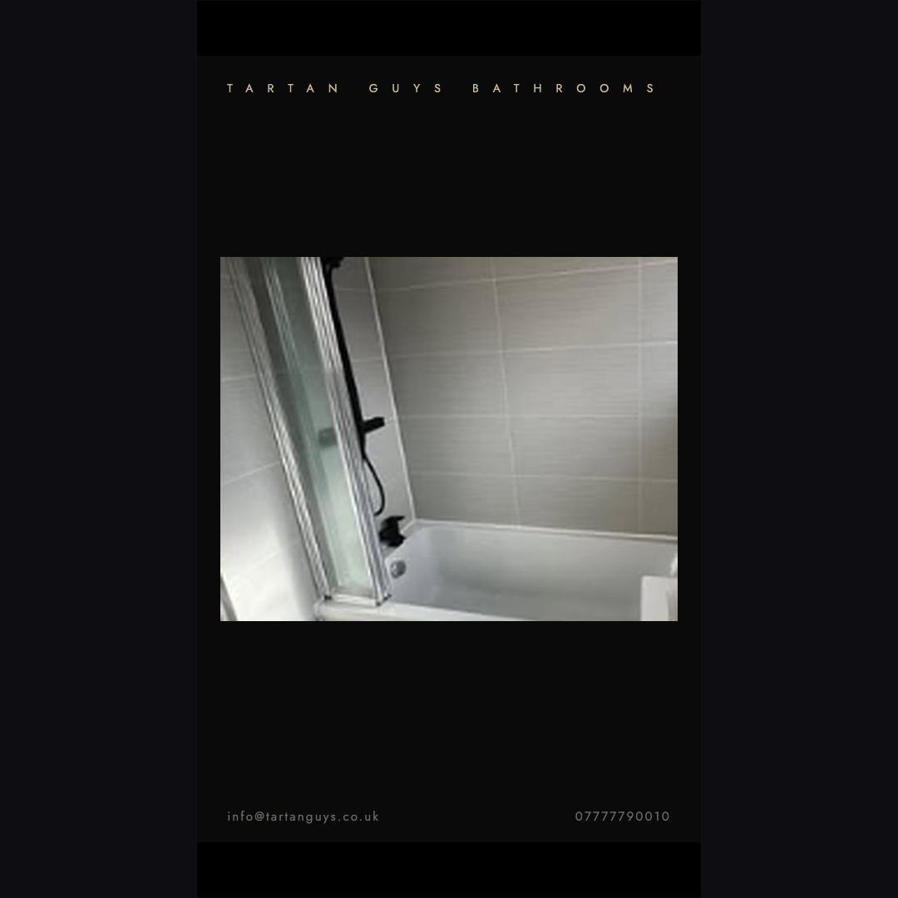
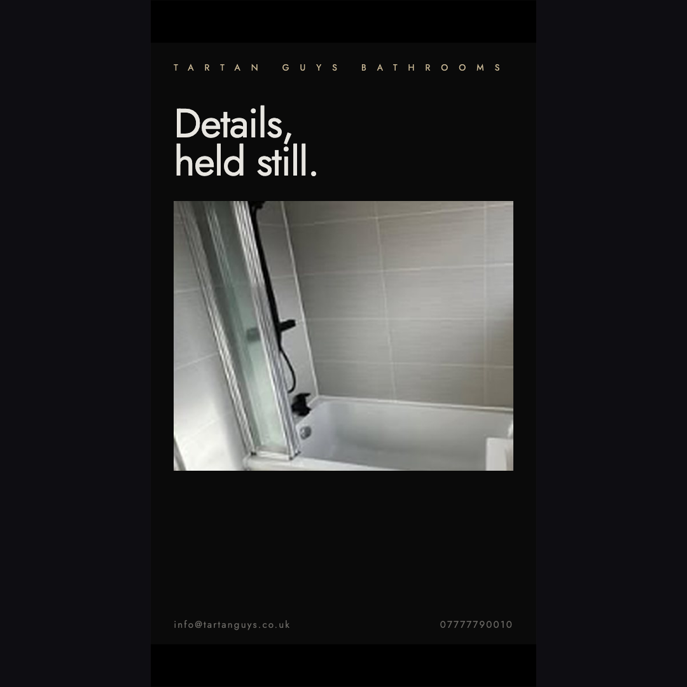
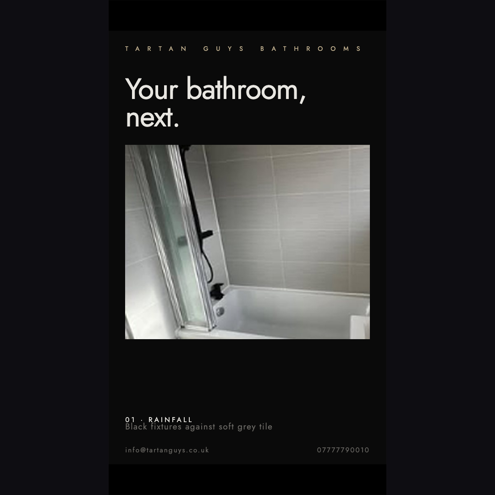
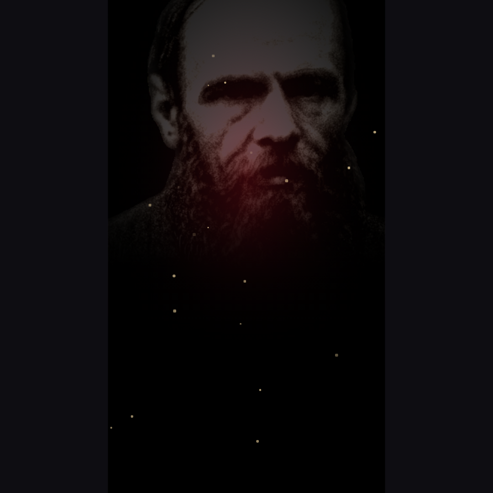
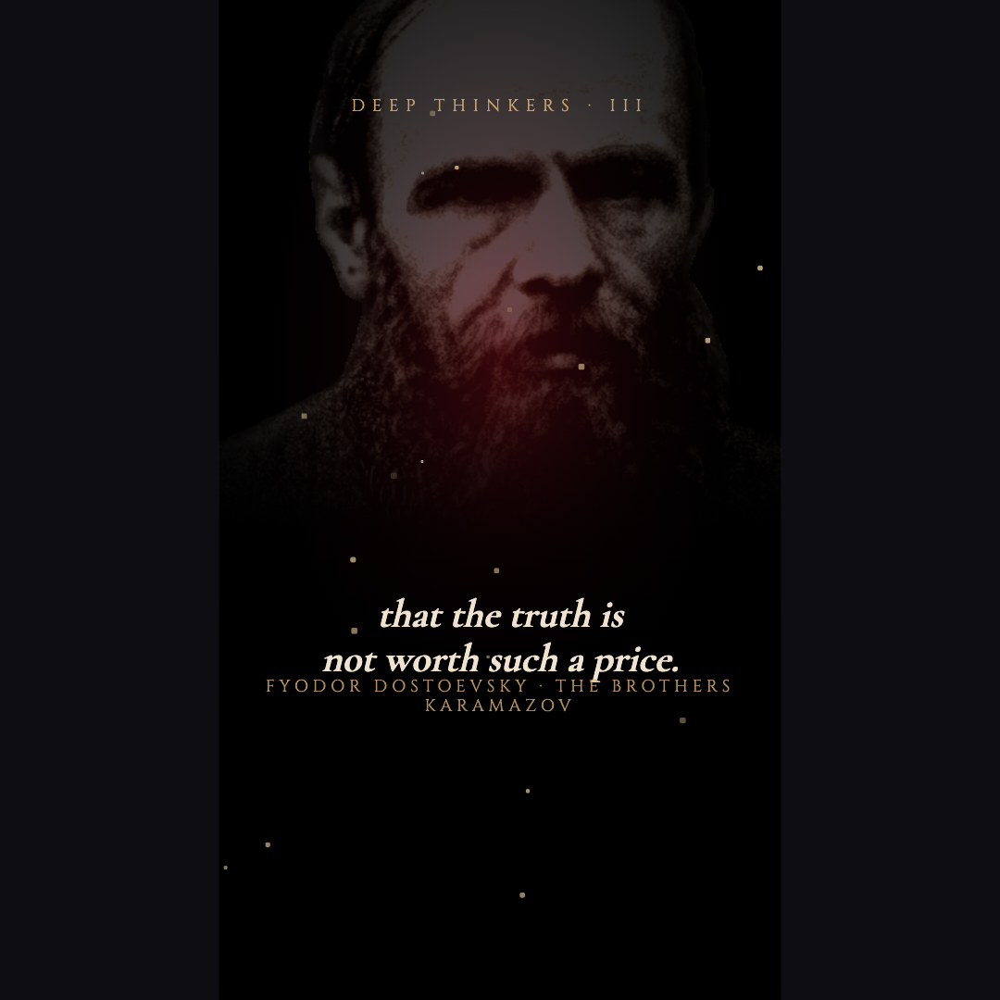
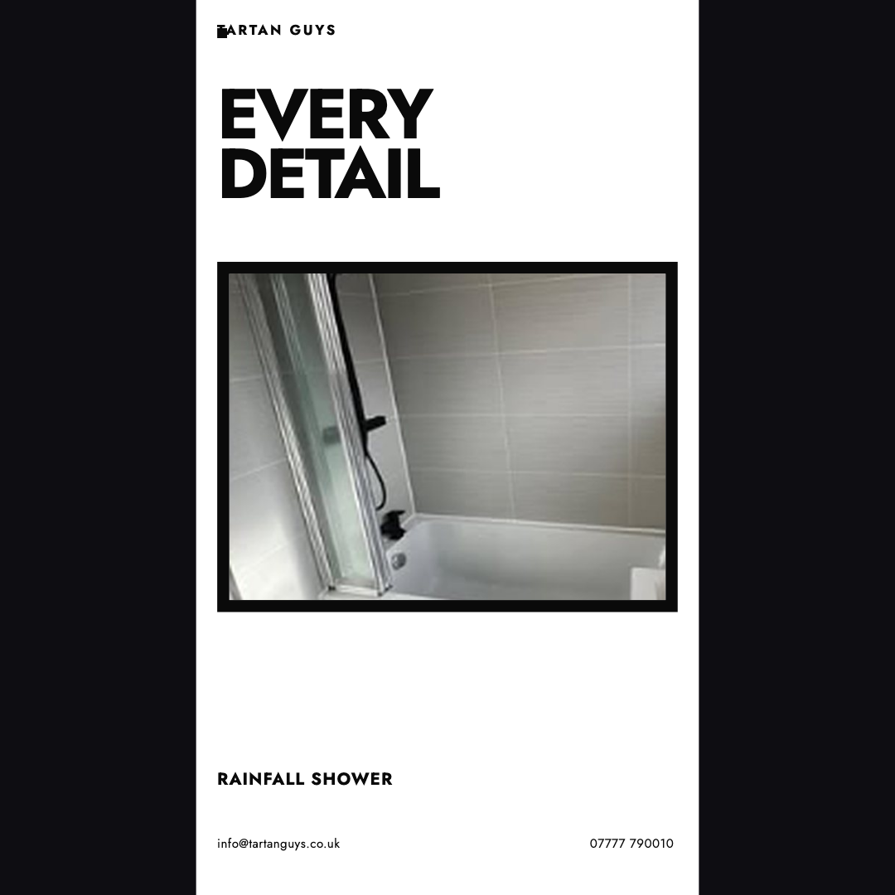

Noir — editorial reveal



Photo settles 1.03→1.0; first headline rises in; cross-fade to the second headline; caption and item label stagger in.
Dostoevsky — quote reveal


The five quote layers share one box, so they are driven as a single quote slot: one visible at a time, each fading out before the next beat.
Brutal — headline swap

“EVERY DETAIL” holds, then cross-fades to “YOURS NEXT”; photo settles subtly; the duplicate “01” layer is hidden throughout.